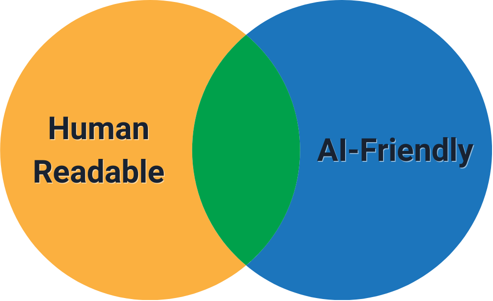
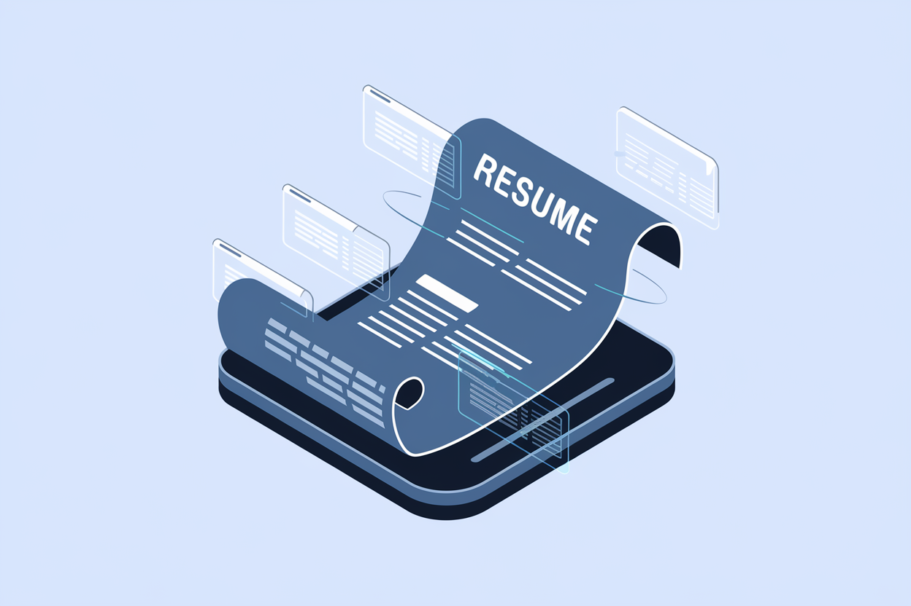
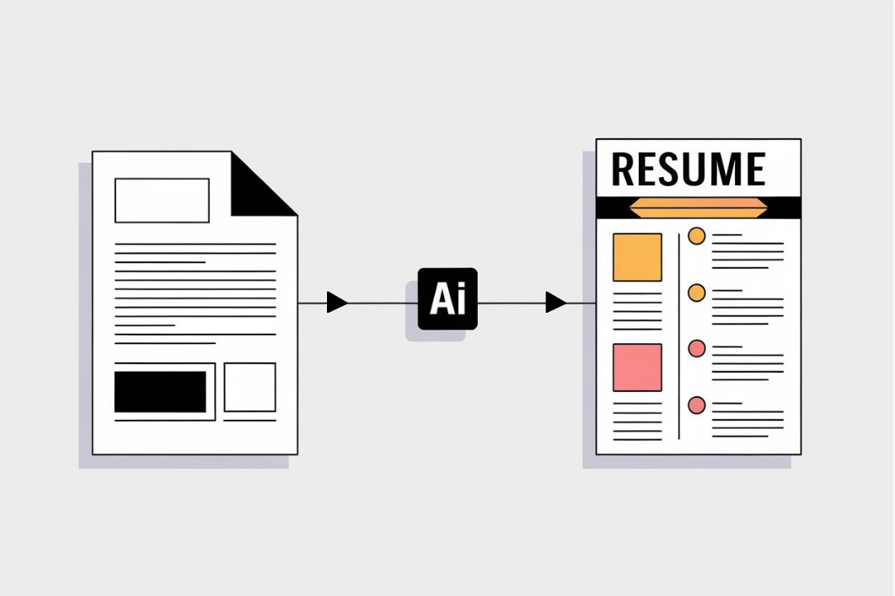

Chapter 2: The New Paradigm of STEM Resumes
Welcome back, fellow STEM superheroes! In our last thrilling episode, we unmasked the mysterious AI lurking in the hiring process. Now, it's time to craft your secret weapon: a resume so powerful even Skynet would hire you.
In the age of AI-driven hiring, your resume must serve two masters: intelligent algorithms and human recruiters, like trying to impress both Mr. Spock and Captain Kirk at the same time – logical precision meets charismatic storytelling. This chapter explores the new landscape of STEM resumes and provides strategies for crafting a document that excels in both digital and human evaluations. Let's dive in!
2.1 Balancing AI Optimization and Human Readability
The key to a successful modern STEM resume lies in striking the right balance between AI-friendly structure and compelling human-readable content. We're aiming for that sweet spot in the middle of a Venn diagram where one circle is "Things Robots Like" and the other is "Things Humans Enjoy Reading."

Structured Data vs. Narrative Flow
AI thrives on structured data, while humans connect with compelling narratives. Here's how to satisfy both without causing a rift in spacetime:
For example, you can use clear section headings like "Technical Skills" or "Professional Experience" to help both AI and human readers navigate your resume. Additionally, use bullet points to summarize specific achievements like, "Developed a machine learning model that reduced data processing time by 30%, improving efficiency and saving the company $200,000 annually."
- Use clear section headings: Help AI categorize your information correctly.
Example: "Technical Skills", "Professional Experience", "Projects" (Not "Things I'm Good At", "Stuff I Did", "Cool Sciency Things")
- Incorporate storytelling elements: Engage human readers with a coherent career narrative.
Example: Use a brief professional summary to tell your career story. "Innovative data scientist with a passion for turning complex problems into actionable insights. Specializing in machine learning algorithms that make Big Data say 'Uncle!'"
- Use bullet points for easy parsing: AI can easily extract information from well-structured bullet points.
- Include context and impact: Provide details that give meaning to your achievements for human readers. Remember, humans love a good story, especially one with a happy ending (like saving the company millions of dollars).
Keyword Integration Strategies
Keywords are crucial for AI screening, but avoid "stuffing" like you would a turkey. Instead, try these tactics:
- Use industry-standard terminology: Align with terms commonly used in your STEM field. Speak the language of your tribe, whether it's "machine learning" or "genetic algorithms."
- Incorporate variations: Include both spelled-out terms and acronyms (e.g., "Machine Learning (ML)").
- Context is key: Use keywords in meaningful sentences that demonstrate your expertise. Don't just list "Python" – show how you used it to charm the data.
Pro Tip: Use the "Results-Oriented Language" formula: Action Verb + Task + Measurable Result.
Example: "Implemented machine learning algorithms to optimize data processing, reducing runtime by 40% and saving the company enough computing time to simulate three Big Bangs."
Readability Best Practices
- Use clear, concise language (No "utilizing" when you can just say "using")
- Opt for simple fonts (Arial, Calibri, Times New Roman – save Comic Sans for your superhero costume design)
- Maintain consistent formatting throughout (Inconsistent formatting is the kryptonite of good resume design)
- Use white space effectively to improve scannability (Give your achievements room to breathe)
2.2 Dynamic Resumes: Adapting to Real-Time Market Demands
The static resume is dying faster than floppy disks. STEM professionals need to embrace a more dynamic approach. Your resume is a living document.

Continuous Skill Updating
AI systems often prioritize recent and relevant skills. Keep your resume as fresh as your coffee with these strategies:
- Regular skill audits: Perform quarterly reviews of your skillset against current job postings.
- Emphasizing ongoing learning: Highlight recent certifications, courses, or projects. Show that your brain is a sponge, constantly soaking up new knowledge.
- Version control: Maintain different versions of your resume for various job types, like having a wardrobe of resumes – different outfits for different occasions.
Project Showcase Strategies
For STEM professionals, projects often speak louder than job titles, so optimize your project descriptions for AI:
- Use metric-driven outcomes: Quantify the impact of your work. Numbers are the universal language of impressiveness.
Example: "Developed an algorithm that improved process efficiency by 30%, saving the company more than $20k every month."
- Highlight cutting-edge technologies: Demonstrate your exposure to emerging tools and methodologies. Show that you're riding the wave of innovation, not paddling behind it.
Example: "Utilized TensorFlow and PyTorch for deep learning model development, teaching machines to think so deeply they started questioning the meaning of life."
- Show scalability: Indicate how your solutions can be applied broadly or to larger systems.
Example: "Designed a scalable cloud architecture supporting 1M+ daily active users, making it more populated than many small countries."
2.3 Customization at Scale: AI-Powered Tailoring

Customizing your resume for each application is crucial but time-consuming. Here's how to use AI to your advantage:
AI-Powered Job Description Analysis
Leverage AI tools to analyze job descriptions and identify key requirements:
- Skill matching: Identify must-have and nice-to-have skills. Separate the "you must know Python" from the "it'd be cool if you could also juggle while coding."
- Cultural fit indicators: Recognize phrases that hint at company values. Decode whether they're looking for a "team player" or a "lone wolf coding genius."
- Project alignment: Find opportunities to highlight relevant projects.
Automated Tailoring Techniques
Use AI-powered tools to efficiently customize your resume, like having a robot tailor for your professional wardrobe:
- Smart content suggestions: AI can propose relevant bullet points from your work history.
- Automated formatting: Ensure your resume structure matches the company's preferences. Because sometimes, it's not what you say, but how you format it.
- Keyword optimization: Intelligently incorporate job-specific terminology. Speak the company's language without sounding like you inhaled a thesaurus.
Ethical Consideration: While using AI for customization, ensure all information remains truthful and accurately represents your experience.
2.4 The Power of Data Visualization in STEM Resumes
In STEM fields, the ability to communicate complex information visually is invaluable. It's time to make your resume look like a dashboard NASA would be proud of. Incorporate data visualization in your resume to stand out:
- Skills matrix: Use a heat map to show proficiency levels across various skills.
- Project impact graphs: Visualize the outcomes of your key projects.
- Career progression timeline: Illustrate your growth and key milestones.
Example Skills Matrix:
Python [●●●●●]
R [●●●●○]
SQL [●●●●●]
TensorFlow [●●●○○]
AWS [●●●●○]
AI Tip: Ensure that any visual elements are in a format that can be easily parsed by ATS systems. Simple text-based visualizations often work best. Remember, we're impressing AI, not winning a graphic design award.
2.5 Leveraging AI for Competitive Analysis
Understanding how your resume stacks up against the competition is crucial. Use AI-powered tools for insights:
- Industry benchmark comparisons: See how your skills and experience compare to industry averages. Find out if you're a big fish in a small pond or a shark in an ocean.
- Gap analysis: Identify areas where you may need additional training or experience. Discover if there's a hole in your superhero suit before you try to fly.
- Emerging trend alerts: Stay informed about rising skills in your field. Be the Early Bird catching the tech-trend worms.
2.6 Addressing Potential Biases in AI-Powered Hiring
Be aware that AI systems may have inherent biases. Teaching a robot to be fair inevitably takes work. Here's how to navigate this challenge:
- Use gender-neutral language: Avoid terms that may trigger gender bias. Your skills have no gender.
- Focus on measurable achievements: Quantifiable results are less subject to bias. Numbers themselves don't lie.
- Highlight diverse experiences: Showcase your ability to work in varied environments. You're not a one-trick pony, you're a whole circus!
2.7 Future-Proofing Your STEM Resume
As AI in hiring continues to evolve, prepare your resume for future advancements:
- Emphasize adaptability: Highlight instances where you quickly learned new technologies.
- Showcase cross-functional skills: AI values versatility in STEM professionals.
- Incorporate predictive elements: Use industry foresight to align your skills with future trends. Be the Wayne Gretzky of your field – skate to where the puck is going to be.
Chapter Summary
- Balance structured data for AI with compelling narratives for human readers (Because impressing robots and humans simultaneously is your new superpower)
- Embrace a dynamic resume approach with continuous updates and project showcases (Your resume should evolve faster than a Pokémon)
- Leverage AI for efficient, targeted customization of your resume (Let the machines help you impress... other machines)
- Incorporate data visualization to effectively communicate your STEM expertise (A picture is worth a thousand words, especially when that picture is a graph of your achievements)
- Use AI-powered competitive analysis to stay ahead in your field (Know thy enemy)
- Address potential biases in AI-powered hiring systems (Because even AI needs a lesson in fairness sometimes)
- Future-proof your resume by emphasizing adaptability and cross-functional skills (Be the STEM professional of tomorrow, today!)
Practical Exercise: Become the Master of Your Resume Domain
Time to put your newfound knowledge to the test! Complete these tasks to level up your resume game:
- Create a skills matrix for your top 10 technical skills. Make it so visually appealing that even Excel is jealous.
- Write three achievement statements using the Results-Oriented Language formula. Remember: Action Verb + Task + Measurable Result = Resume Gold.
- Analyze a recent job posting using an AI job description tool and identify areas to customize your resume.
Pro Tip: Don't just complete this exercise – make it a regular part of your career maintenance routine. Your future self thanks you (from your corner office).
Looking Ahead
Congratulations, intrepid STEM explorer! You've now mastered the art of crafting a resume that speaks both robot and human. In the next chapter, we'll focus on the specifics of crafting your AI-optimized STEM resume, including section-by-section guidance and field-specific strategies.
Quiz: "Chapter 2 Knowledge Check"
Time to test your newfound resume wisdom! Don't worry, this quiz is AI-friendly and human-approved.
-
What is a key strategy for balancing AI optimization and human readability in resumes?
-
How can STEM professionals make their resumes more dynamic?
-
What is an effective way to showcase projects on a STEM resume?
-
How can AI be leveraged for resume customization?
-
What is a good strategy for future-proofing a STEM resume?
Answers: 1-b, 2-b, 3-b, 4-b, 5-c
How did you do? If you aced it, congratulations! You're well on your way to becoming a STEM resume ninja. If not, don't worry – even Tony Stark had to start somewhere. Keep studying, and soon you'll be crafting resumes that make both AI and humans swoon!